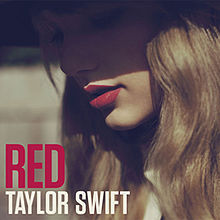

Red (2012)
- Red:

Informações Gerais
- Artista: Taylor Swift
- Data de Lançamento: 22 de outubro de 2012
- Gênero: Country e Pop
- Gravadora: Big Machine Records
- Produtor: Nathan Chapman, Jacknife Lee, Max Martin, e Shellback
Faixas Notáveis
- "State of Grace" - A faixa de abertura do álbum, com uma sonoridade grandiosa e uma introdução marcante, mistura influências de rock e pop.
- "Red" - A faixa-título que explora a intensidade de um relacionamento apaixonado e tumultuado, com um som vibrante e enérgico.
- "I Knew You Were Trouble" – Um dos maiores sucessos do álbum, com uma mistura de pop e dubstep, abordando a dor e o arrependimento de se envolver com alguém que não era bom para ela.
- "We Are Never Ever Getting Back Together" – Uma música pop contagiante sobre a decisão de terminar um relacionamento e seguir em frente.
- "22" – Uma canção animada e festiva que celebra a liberdade e o entusiasmo de estar na casa dos 20 anos.
Legado
- "Red" é frequentemente elogiado por sua audácia em explorar diferentes estilos musicais e por sua habilidade de capturar a complexidade emocional dos relacionamentos. O álbum ajudou a solidificar a transição de Taylor Swift de uma estrela do country para uma figura central na música pop, marcando um período significativo de crescimento e inovação na sua carreira.